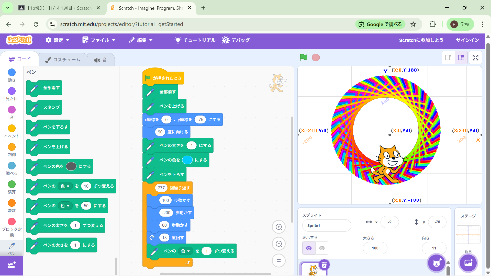
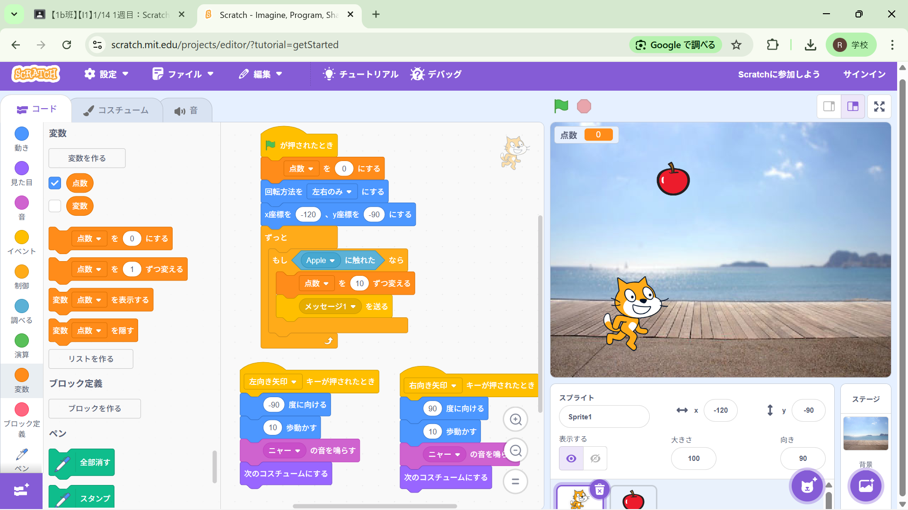

1週目のレポート ： 公大高専１年実習I-1
1b班39番 森川義己
第1週目
1-1 サイエンスアート

1.内容
スクラッチでスプライトを動かし、線を引く内容で、様々な色を使うことができる。
ネコを動かすときに動いたところにペンを引くことでサイエンスアートができる。
2.感想
ネコがぐるぐる回転しているのが面白かった。プログラミングでこんなことができるのだな
と感じた。逆方向にも回転させたいと思った。
1-2 ゲーム

1.内容
ネコのキャラクターを移動させて、りんごに触れたときにポイントを10ポイントずつポイントが
増えるゲームのプログラムを作成した。背景も自由に変えることができる。
2.感想
小中学生の頃にプレイしたことがあるような感じのゲームだった。ネコの鳴き声を自由に変える
ことができるのはびっくりした。背景もこのときに選べるのだなと思った。
1-3 ホームページ作成
私のホームページ
1.内容
GitHubを使って自分のことを紹介する。特徴・特技や趣味・嗜好を紹介する内容だった。
自分のURLを作成し、テンプレートを編集して自分自身の内容に置き換える。
2.感想
部活のIコースの先輩や同級生のこからホームページを作るのは聞いていたが、本当に作って、
しかも本格的なものを作ることができたので、とても嬉しくて、楽しかった。
各ページへのリンク
1週目のレポート
2週目のレポート
3週目のレポート
私のホームページ